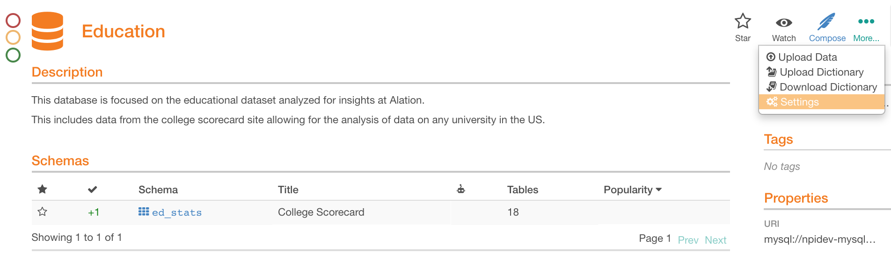
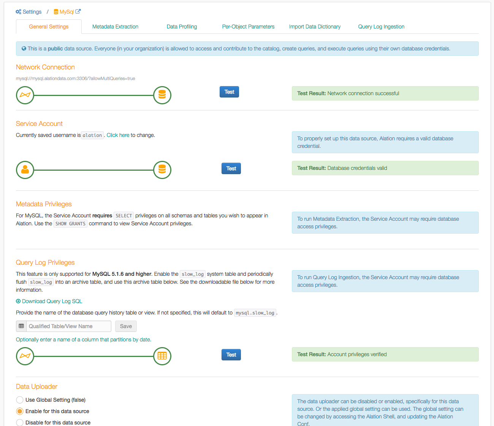
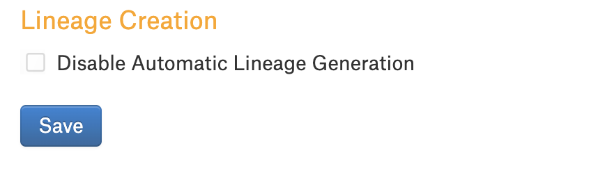
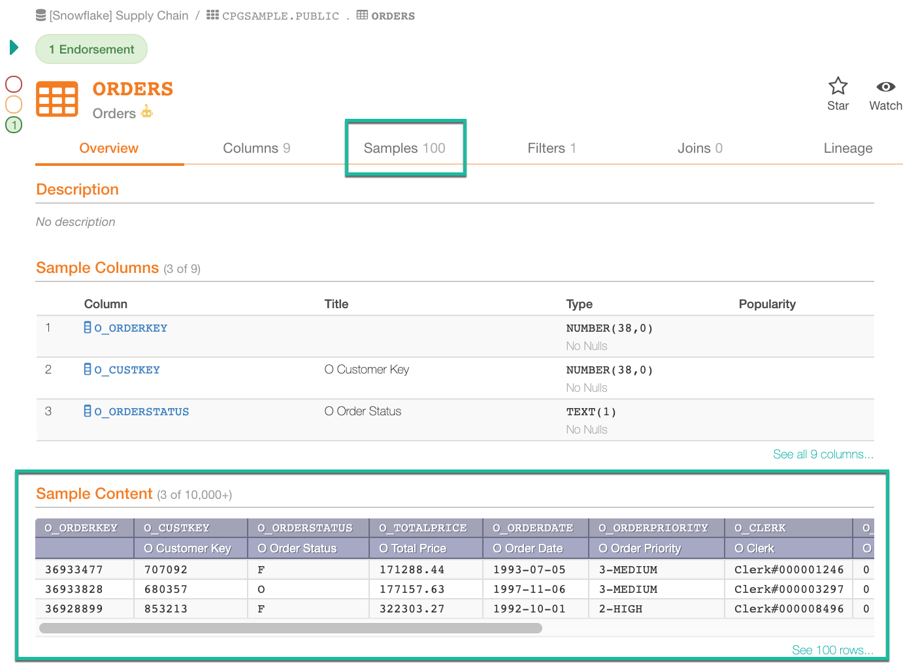

Configuring a Data Source¶
Each data source has a Settings page specific to that data source. For full configuration of a data source, ensure you have:
Set up Metadata Extraction to run on an appropriate schedule
Determined if you will be generating samples
Set up Query Log Ingestion to run on an appropriate schedule
The Settings page is available for Server Admins and Data Source Admins of this data source. To open the Settings, click More… then Settings in the upper-right corner of a data source page:
{kind=link}
A data source may have settings specific to the type of the database it connects to. For specifics about each data source type, refer to the dedicated section about this data source. This article gives a general overview of the data source Settings page:
{kind=link}
Access Tab¶
The Access tab allows you to grant access to the data source to other users.
General Settings¶
The General Settings tab of a data source settings page shows the database connection status and contains configuration parameters, including database-specific parameters.
Disable Automatic Lineage Generation¶
Applies from version 2022.1
By default, lineage data for a data source will be automatically generated during metadata extraction, query log ingestion, and when users run queries in Compose. It is possible to disable automatic lineage generation. In this case, no lineage data will be auto-generated during metadata extraction, query log ingestion, or querying the database in Compose.
To disable automatic lineage generation, select the Disable Automatic Lineage Generation checkbox on the General Settings tab and click Save.
{kind=link}
If the data source already has lineage data that was generated prior to disabling automatic lineage, then:
The existing lineage data will stay in the application.
New lineage will not be generated automatically.
Note
Lineage data can be created manually by admin users or added using the Alation API. For details, refer to:
Metadata Extraction¶
Metadata Extraction (MDE) is the process of extracting metadata from the database into the Alation catalog to synchronize them and provide the catalog users with an up-to-date representation of the data. Metadata extraction should be run as the first step in building your data catalog. Depending on your organization’s needs and usage, MDE can be run manually or on an automatic schedule. Ideally, MDE should be run as a scheduled job to continuously keep your catalog up-to-date.
Data Profiling¶
Data Profiling is a background job that selects a limited number of rows from each table in the database to provide a quick preview of the data content. You can schedule this job according to the frequency and size of database updates. As the result of Data Profiling, Alation will provide sample data for table and column objects:
{kind=link}
Profiling can be based on the permissions of the Service Account (with visibility controlled by Per-Object Parameters) or configured to be run by individual users based on their permissions. To run Profiling based on the permissions of the Service Account, start the job from the Data Profiling tab. It is in most cases not necessary to run Data Profiling as a scheduled job.
Metadata Extraction must be complete to run Data Profiling.
Per-Object Parameters¶
Alation allows admins to control, at the object level, whether an object should be browseable, whether it should be profiled, and whether a column should be marked sensitive.
The Per-Object Parameters tab can be used to set up view permissions at the data object level. Per-object parameters define if a data object should be browseable using left-hand navigation and search, if it should be included in profiling, or if it has sensitive data.
Query Log Ingestion¶
Query Log Ingestion (QLI) is processing of a selection of database query logs to calculate Popularity, Top Users, Lineage, and to supply JOIN and filter information to the catalog. Alation recommends that you enable query logging on a data source two weeks before running the initial QLI so that Alation has enough query history to ingest. Alation recommends that QLI should be run as an automatically scheduled job to keep your catalog data up-to-date. After the specific setup requirements for Query Log Ingestion are completed, it can be run from the Query Log Ingestion tab. Query Log Ingestion should be run as a scheduled job to keep your catalog fresh. Metadata Extraction must be complete to run Query Log Ingestion.
Steps to Configure a Data Source¶
Run Metadata Extraction¶
Fetch schemas from data source
Select schemas to include or exclude if desired
Run the extraction job
For full configuration, set up MDE to run on a schedule.
Add query log table or view in Query Log Privileges section (if required): Run query log ingestion. Select a time window when there are logs. Run Profiling (Sampling) if desired. For full configuration, set up Metadata Extraction and Query Log Ingestion to run on a schedule.
Configure and Run QLI¶
Add a query log table or view in Data Source Settings > General Settings > Query Log Privileges section (if required) then run Query Log Ingestion (QLI). Select a time window when there are logs.
For full configuration, set up QLI to run on a schedule.
Profiling (Sampling)¶
Run Profiling (Sampling) if desired.
Additional alation_conf Configuration Options¶
Alation’s automatic ingestion, by default, lags two days behind the
current day. (This allows Alation to more effectively process long
running queries). This value can be changed in alation_conf using
parameter alation.query_ingestion.auto_ingestion_lag_days
Description Lags behind the current date to make sure queries get logged by the time we try to ingest them. The longest running query seen so far is 29 hours.
Current value two days
Comments:
It is used only by automatic query ingestion.
Reducing this value to less than two days may cause long-running queries to be skipped.
Due to timezone differences between the Alation server time and the database time, the two-day buffer might be bigger or smaller. This threshold was not designed to be a hard limit.
To change the value:
sudo /etc/init.d/alation shell
alation_conf alation.query_ingestion.auto_ingestion_lag_days -s <new_value>